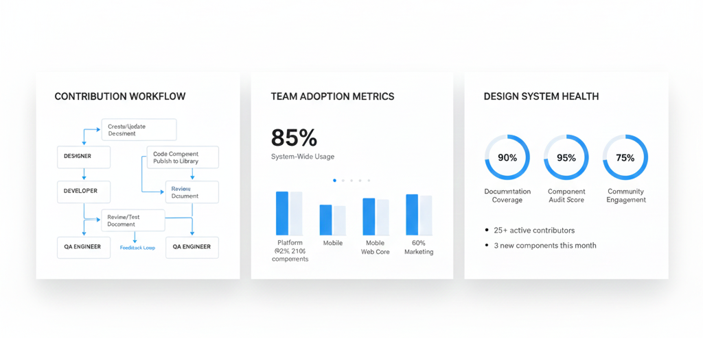

Enterprise Design System: Scaling Design for 200+ Teams
Led the creation of a comprehensive design system that unified b.xom's global platform, reducing development time by 65% while increasing UI consistency to 94% across 40+ localized experiences.
Strategic Context
Role
Senior Product Designer & System Lead
Scope
Company-wide system for 200+ teams
Timeline
18 months (2020-2021)
Challenge
Fragmented UX slowing innovation at scale
The Scaling Challenge
As b.xom expanded to 200+ product teams, rapid growth came at the cost of cohesion. Each team operated independently, creating:
Critical Fragmentation Issues
- • Inconsistent experiences: 37+ button variations, multiple navigation patterns
- • Engineering waste: 30% of dev time rebuilding existing components
- • Slow velocity: 6-8 week design-to-development cycles
- • Accessibility debt: Inconsistent compliance across teams
The platform felt like multiple products stitched together. We needed to enable scale without sacrificing user experience or development efficiency.
My Strategic Approach
Foundations First
Built comprehensive token system before components to enforce systematic thinking
Collaborative Governance
Created tiered contribution model balancing consistency with team autonomy
Developer-Centric DX
Prioritized tooling and documentation making adoption the easiest path
Token Architecture
Semantic Naming Strategy
color-blue-500
color-background-primary
This abstraction enabled theme switching, accessibility compliance at the token level, and global visual updates by changing single values.
Component Ecosystem
Foundation Layer
Tokens for colors, typography, spacing, and elevation
Atoms (30+)
Core components maintained by central team: buttons, inputs, icons
Molecules (50+)
Co-created with product teams: property cards, booking flows
Patterns & Templates
Documentation of complex user flows and interaction patterns
Example: Adaptive Date Picker
One of our most complex components, the date picker needed to handle single dates, ranges, multi-month selections, and 40+ locale formats. We built it as a modular system:
- Core logic as a headless component
- Presentation layer with theming via tokens
- Locale plugins for internationalization
- Slot-based customization for pricing overlays
This reduced implementation time from 3 weeks to 2 hours for product teams.

Cross-Team Collaboration Framework
We established a rotating Design System Council with representatives from 8 key product areas. This group met bi-weekly to review proposals, resolve conflicts, and prioritize our roadmap based on cross-team impact. The council created a sense of collective ownership beyond our core team.
Measured Impact
Faster design → dev
UI consistency
Component reuse
Faster onboarding
📈 Strategic Value Delivered
This design system transformed from a side project into core infrastructure, enabling b.xom to launch A/B tests in days instead of weeks, maintain brand consistency across 40+ localized experiences, reduce accessibility compliance risks by 85%, and free product teams to focus on unique user problems rather than rebuilding foundational UI.